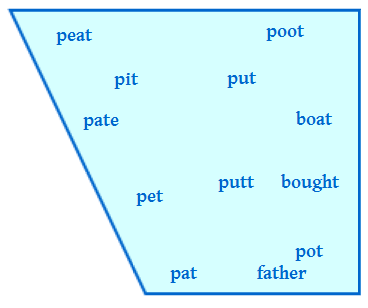
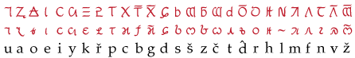
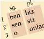

Caja de herramientas para construir idiomas
Modelos
Idiomas naturales y no naturales
En lo personal a mí me gustan los idiomas naturalistas, por lo que mis lenguas construidas o artificiales (para las cuales existe el término (las) conlangs) suelen estar llenas de irregularidades, derivaciones lexicales curiosas y frases interesantes.
Es más fácil, sin duda, crear un idioma lógico, y hasta deseable si se desea crear un idioma auxiliar para uso internacional, como el esperanto. El peligro aquí se encuentra en a) crear un sistema tan prístino, tan abstracto, que sea imposible de aprender; b) no darte cuenta que has producido algo ilógico en los modelos usados. Sólo pregúntame de las irregularidades del esperanto un día de estos.
Modelos no occidentales (o al menos no como el español o el inglés)
Leer de algunos idiomas que no son indoeuropeos, como el quechua (puedes ver mi introducción al quechua aquí, en inglés), el chino mandarín, el turco, el árabe o el suajili, puede ser muy revelador.
Aprende otros idiomas, si puedes. Si los idiomas te son difíciles de aprender, entonces solo echa una ojeada a una gramática para encontrar ideas que robar. The World’s Major Languages, editado por Bernard Comrie, contiene descripciones sustanciosas de cincuenta idiomas. An Introduction to the Languages of the World, escrito por Anatole Lyovin, provee una visión general y fácil de leer de todas las familias de idiomas del mundo, recalcando lo más destacado y dando esbozos de algunos idiomas importantes que Comrie omite.
Si no hablas otro idioma bien, estás bastante condenado a producir cifrados del español. Apenas echar un vistazo a algunas gramáticas te puede ayudar para que no copies la gramática del español, y te puede dar buenas ideas que probar; aunque la dificultad está en el léxico. Si lo único que conoces es el español, tenderás a duplicar la estructura y las frases del vocabulario del español. Abajo doy varios consejos para minimizar este problema.
Sonidos
Los angloparlantes que no son lingüistas suelen empezar con el alfabeto, añadiendo apóstrofos y tildes. El resultado muchas veces se parece demasiado al inglés, tiene más sonidos de lo necesario, y ni el propio autor sabe cómo pronunciar las palabras.
Obtendrás mejores resultados según sepas más de fonética (el estudio de los sonidos posibles en un idioma) y de fonología (cómo los sonidos se usan en el idioma).
Si solo puedes leer un libro de lingüística... además del mío, quiero decir... asegúrate que sea A Practical Introduction to Phonetics, escrito por J.C. Catford. Catford presenta los sonidos posibles sistemáticamente, con descripciones prácticas de cómo producir cada uno sin siquiera haberlos oído.
No te preocupes mucho por los términos técnicos encontrados abajo. Los hay muchos, pero es bueno conocerlos todos, y el resto del documento no es así de difícil.
Los lingüistas de verdad y su notación
Los libros para aprender idiomas suelen describir los sonidos comparándolos con los del idioma del libro (ej. “la t del francés suena como la t española”), presentando recetas para producir sonidos inusuales. En vez de eso los lingüistas usan el AFI (el Alfabeto Fonético Internacional), un conjunto de símbolos con significados precisos.
No voy a depender mucho del AFI aquí, ya que es un tanto estremecedor hasta que aprendas algo sobre fonología. Pero voy a presentar los símbolos mientras hablamos de cada sonido. Para clarificar que uso un símbolo del AFI, lo pondré así: p. Muchos de ellos, como p, son lo que esperarías a juzgar por el español.
Tipos de consonantes
Las consonantes se forman obstruyendo el flujo de aire desde los pulmones. En lingüística, no las organizamos alfabéticamente, sino en una tabla de dos dimensiones: el lugar de articulación y el cierre.
Lugar de articulación
El lugar de articulación describe dónde ocurre la obstrucción. Por convención, empezaremos por los labios y luego seguiremos adentro. Compara las descripciones del diagrama, y asegúrate de pronunciar las consonantes para sentir dónde se producen.
| Nombre | Obstrucción | Ejemplos |
| Labial | solo los labios | p b m w |
| Labiodental | labios y dientes | f |
| Dental | lengua tocando los dientes | t d, la z del castellano del norte de España |
| Alveolar | lengua detrás de los dientes | s, z, r, la t del inglés |
| Palato-alveolar | lengua más atrás de los dientes | sh (ʃ), j del francés (ʒ) |
| Palatal | lengua en contacto con el paladar | la ñ (ɲ), la c del sánscrito, la y en “voy a” (j) |
| Velar | parte de atrás de la lengua contra la parte de atrás de la boca | k g, j (x), el dígrafo ng en inglés como en sing (ŋ) |
| Uvular | la lengua comprime la parte más atrás de la boca | la q del árabe, la r del francés (ʀ) |
| Glotal | constricción de la garganta | la h del inglés, la plosiva glotal ʔ en la pronunciación del inglés uh-oh, o de bottle según pronuncia John Lennon |
Si necesitas distinguir las t, d dentales de las alveolares en el AFI, puedes usar t̪ d̪ para las dentales.
Grado de oclusión (cierre)
Las consonantes varían también sobre cuánto obstruyen el paso del aire.
| Nombre | Modo | Ejemplos |
| Oclusivas | Obstrucción completa (aunque sea solo momentánea) | p t k ʔ, b d g en “ambos, andar, hongo” |
| Fricativas | Impedidas lo suficiente para crear un silbido | f s, sh (ʃ); j del francés (ʒ), j del español (x) |
| Affricadas | Plosiva que suelta fricativa | ts, ch (tʃ), y en “enyesar” (ɟʝ) |
| Aproximantes | Impedidas muy poco, no hay silbido | r l w, b d g en “había, hada, hago” (β̞ ð̞ ɣ̞), y en “voy a” (j), la h del inglés |
| Vocales | No hay cierre para nada —¡esto son las vocales! |
Muchas veces les sorprende a los hablantes del inglés (o del español) que ch no sea nada más que t + sh (tʃ). Igualmente, el sonido de y en “enyesar” se puede analizar como d + el sonido de la j del francés.
De manera confusa, el símbolo del AFI para el sonido de la y en “voy (a)” es j. Solo piensa en la j del alemán, que es el mismo sonido.
Más distinciones
La sonoridad trata de la vibración de las vocales. (Por si no estás seguro: cuando tarareas, están vibrando; cuando susurras o cuchicheas, no están vibrando.) La diferencia entre t y d se basa en la sonoridad: el sonido t es sordo y d es sonoro.
Las consonantes sordas y sonoras suelen aparecer en parejas, aunque no siempre. Por ejemplo, el español tiene las parejas p b, t d, k g, pero al contrario del inglés, los sonidos f y s no tienen pareja. El árabe tiene b pero no tiene p.
La sonoridad no es binaria; por el contrario, las consonantes varían sobre cuándo las cuerdas empiezan a vibrar —el tiempo de ataque de sonoridad, abreviado VOT por sus siglas en inglés (voicing onset time). El inglés tiene un VOT bastante tardío, el español lo tiene más temprano.
En las consonantes nasales, el aire viaja a través de la nariz así como a través de la boca: m n.
La boca hace precisamente lo mismo en los sonidos b y m; la diferencia es que el paso nasal se abre en m (por lo que el sonido también se puede mantener).
Las oclusivas se pueden soltar ligeramente o con un soplo de aire evidente —es decir, con aspiración. En inglés, las oclusivas sordas llevan aspiración al inicio de palabra (pot, tall, cow) entre otros lugares. El español no tiene esta aspiración inicial.
En chino mandarín, en hindi y en quechua, hay series separadas de oclusivas aspiradas y no aspiradas: p pʰ. (La h sobrescrita mostrada es la marca para la aspiración en el AFI.) Beijing no empieza con un sonido b, sino con el sonido p.
Las consonantes palatalizadas se pronuncian mientras se levanta la lengua hacia el techo de la boca. Es decir, más o menos la posición de la lengua al pronunciar la y de “voy (a)”; una consonante palatizada podría sonarle a un hispanohablante como si hubiera tal sonido y antes o después. En ruso y en gaélico irlandés, hay series distintas de consonantes palatizadas y no palatizadas. La palatización se marca en el AFI con una j sobrescrita, por ej. nʲet, que es нет en ruso.
Róticas
Las consonantes róticas comprenden los sonidos que parecen (o que al menos se escriben generalmente con) una r, los cuales vienen en un número de variantes.
- La r del inglés estadounidense es generalmente un sonido retroflejo ɻ, pronunciado enrollando la lengua detrás del puente alveolar. Algunos idiomas, como el hindi, tienen toda una serie de consonantes retroflejas, incluyendo las oclusivas ʈ ɖ.
- La r del español como en caro es una vibrante simple ɾ, la cual consiste en un contacto corto de la lengua contra el puente alveolar.
- La doble rr del español como en carro es una vibrante múltiple, la cual es como una vibrante simple repetida, haciendo vibrar la lengua contra el puente alveolar.
- La r del francés es una aproximante o vibrante múltiple uvular ʀ. Suena parecido a una j según como se pronuncia en el norte de España o ciertas partes del Perú, pero es sonora; suena como si se hiciera gárgaras.
Laterales
También hay varias consonantes laterales, sonidos que suenan como la l, en los cuales la lengua se pone en posición para una oclusiva pero deja espacio en los lados para que el aire salga.
- La l clara es el sonido de la l en español. La l en inglés es alveolar, en ruso es dental.
- La l oscura ɫ es el sonido de la l al final del inglés cool; este se forma retrayendo la lengua hacia el velo del paladar —un ejemplo de velarización, proceso que también se puede aplicar a otras consonantes.
- Una l palatal ʎ se produce cerrando el paso del aire más atrás, contra el paladar duro, como en el italiano voglio. En algunos dialectos del español se pronuncia la ll de esta manera (pero la gran mayoría la pronuncian al igual que la y).
- Si el borde de la lengua se acerca más a los lados de la boca, de manera que haya un siseo o silbido evidente, entonces se encuentra ante una fricativa lateral ɮ. Esta también tiene una versión sorda ɬ.
El cuadro de consonantes
Los lingüistas prefieren organizar las consonantes en un cuadro (o tabla). He aquí el cuadro para el español:
| labial | labiodental | dental | alveolar | alv-pal | velar | glotal | |
| oclusivas | p b | t d | k g | ||||
| fricativas | f | (z) | s | j | |||
| africadas | ch y | ||||||
| vibrantes | ɾ r | ||||||
| aproximantes | l | (ll) | |||||
| nasales | m | n | ñ |
El sonido de la z (y de la c antes de e e i, como en Cecilia), según se pronuncia por la mayoría de personas en España, es θ, distinguido del sonido s. El resto de hispanohablantes no tiene esta distinción, y por ello se encuentra entre paréntesis.
Algunas pocas personas en España y Sudamérica (muy pocas por cierto) distinguen todavía ll de y, de manera que (ella) ralla y (una) raya suenan diferente, pronunciando ll con la palatal ʎ.
Los sonidos oclusivos b d g se encuentran en palabras como ambos, andas, angular, pero los tres tienen los alófonos (o variantes) aproximantes β̞ ð̞ ɣ̞, respectivamente, en palabras como había, hada, hago.
El tema de la y en español es complicado, ya que varía mucho según el dialecto. Todo el mundo pronuncia la y de enyesar con el sonido africado ɟʝ, pero el sonido de la y de hoyo presenta gran variedad. Los españoles, mexicanos, peruanos y chilenos dicen ʝ, los centroamericanos dicen j (es decir, una i pronunciada rápido), la mayoría de argentinos y uruguayos dicen ʃ (“sh”) o ʒ, y los de Bogotá dicen ɟʝ tal y como en enyesar.
La vibrante simple ɾ es la r de pero, mientras que r es la rr de perro.
Además, ch es tʃ, ñ es ɲ y j es x.
Por otra parte, he aquí el cuadro para las consonantes del inglés:
| labial | labiodental | dental | alveolar | alv-pal | velar | glottal | |
| oclusivas | p b | t d | k g | ||||
| fricativas | f v | θ ð | s z | sh zh | h | ||
| africadas | ch j | ||||||
| aproximantes | w | r l | y | ||||
| nasales | m | n | ng |
La grafía th del inglés representa en realidad dos sonidos, el sonido θ sordo de thick y el ð sonoro de this.
Para la columna de las alveolares-palatales he usado las grafías inglesas; sh zh son ʃ ʒ; ch j son tʃ dʒ; y is j. Y ng es ŋ.
En este momento, si se le diera un nombre como oclusiva velar sonora o aproximante alveolar-palatal sorda, debería de poder entender lo que significa.
Inventando consonantes
Nota que los cuadros de consonantes del español y del inglés tienen espacios sin rellenar. ¿Significa esto que se pueden inventar nuevos sonidos llenando espacios del cuadro? Oh sí.
Pon atención en la celda debajo de k g, vacía en la tabla para el inglés —las etiquetas nos indican que es para fricativas velares. Se puede llenar con el sonido x de la j del español, y además la versión sonora gh ɣ existe en griego.
¿Qué hay de una africada labial pf? El alemán la tiene. Es posible pronunciar fricativas labiales ɸ β también —no una f ya que esta involucra al labio al inferior en contacto con los dientes, pero una fricativa con silbido suave formada únicamente con los labios. El japonés fuji empieza con ɸ.
Más emocionante todavía es añadir series enteras de consonantes usando contrastes que no existen en español (o en inglés), tales como la palatalización o la aspiración. O por el contrario, quitar series existentes. El quechua de Cuzco, por ejemplo, tiene tres series de oclusivas: aspiradas, no aspiradas, y glotalizadas, pero no distingue entre consonantes sonoras y sordas.
La clave para crear un idioma naturalista es, de hecho, añadir o (o quitar) dimensiones enteras. Se puede concebir un idioma con solo una consonante glotalizada, pero es más probable que tenga una serie de ellas (según los puntos de articulación: p’ t’ k’). Un idioma puede contar con solo dos consonantes palatales, como la mayoría de dialectos del español con su y y su ñ, pero uno con toda una serie de ellas es más típico o común.
También puede añadir puntos de articulación. Por ejemplo, mientras que el español y el inglés tienen tres series de oclusivas, el hindi tiene cinco (labial, dental, retrofleja, alveolopalatal y velar; las consonantes retroflejas involucran enrollar la lengua hacia atrás un poco), y el árabe tiene seis (labial, dental, dental ‘enfática’ (ni preguntes qué es), velar, uvular, glotal).
Algunas consonantes son más comunes que otras. Por ejemplo, prácticamente todos los idiomas tienen las oclusivas p t k. El libro entitulado Phonology de Lass da ejemplos; véase también The Cambridge Encyclopedia of Language escrita por David Crystal, p. 165.
Vocales
Los aspectos más importantes de las vocales son la altura (o abertura) y la localización (o anterioridad).
La altura se trata de cuánto se eleva la lengua; la boca también tiende a abrirse más ampliamante al bajar la lengua, por lo que a las vocales de altura baja también se les llama abiertas.
La escala usual contiene vocales altas como mini tutú, intermedias como mete moto, y bajas como rana.
Muchos idiomas, como el francés, tienen cuatro niveles en vez de tres. En lugar de un solo nivel de vocales intermedias, hay dos alturas:
- e o semicerradas como la é y la vocal de eau en francés, o la e y la o del italiano cera, voce.
- ɛ ɔ semiabiertas como la è y la vocal o de donne en francés, o la e y la o del italiano sella y cosa.
La localización se trata de la cercanía de la lengua respecto al frente de la boca.
- Las vocales anteriores incluyen i e como en mini mete. La vocal del inglés pat es æ, una vocal anterior abierta.
- Las vocales posteriores incluyen u o como en tutú todo.
- También hay vocales centrales, para las cuales la lengua se encuentra parcialmente hacia atrás. La a del español es una vocal central, así como la turbia ə o schwa del inglés tal y como aparece en palabras como China, about, photograph, lion, unofficial, patient.
El cuadro de vocales
Puedes poner las vocales del español en un cuadro según estas dos dimensiones. La parte más baja del cuadro suele dibujarse más corta ya que no le queda mucho espacio a la lengua para moverse al abrirse la boca.
Para probar como se sienten estas distinciones, pronuncia las vocales del diagrama, de arriba a abajo o de lado a lado, dándote cuenta de dónde se encuentra la lengua y de su cercanía con respecto al cielo de la boca.
La idea de este ejercicio es lograr entender lo que hace la lengua al hacer sonidos cerrados y abiertos, anteriores y posteriores. Las vocales “ideales” del AFI son extremas —por ejemplo, i es lo más cerrada y lo más anterior posible.
Otras distinciones de vocales
Las vocales pueden variar en otras dimensiones también.
Los labios pueden ser redondeados o no. Es típico que las vocales anteriores como i e ɛ no sean redondeadas, mientras que las posteriores como u o ɔ sí lo sean. Pronuncia muuu y nota que los labios se aprietan hacia el centro —eso es el redondeamiento. Contrasta esto con la vocal de mí, la cual no es redondeada.
Ni el español ni el inglés tienen vocales anteriores redondeadas, pero el francés y el alemán si tienen tales vocales (francés: u, œ; alemán: ü, ö). Los símbolos del AFI son la cerrada y, la semicerrada ø, y la semiabierta œ. Para pronunciar y, di i y luego redondea los labios como con la vocal u.
Los símbolos del AFI para las vocales posteriores no redondeadas son la cerrada ɯ, la semicerrada ɤ, y la semiabierta ʌ. Esta última vocal es la misma de cut según la pronuncian muchos angloparlantes. La vocal rusa ы y la japonesa u son ɯ; para pronunciarla, di u pero con los labios relajados.
Las vocales pueden contrastar en longitud, como en latín, griego antiguo, sánscrito o inglés antiguo. El estonio tiene tres grados de longitud. Una vocal larga simplemente se pronuncia por más tiempo. El sonido a largo suele transcribirse ā, aunque en el AFI se escribe aː.
Así como las consonantes, las vocales pueden ser nasalizadas —pronunciadas con el paso nasal abierto. El francés por ejemplo tiene cuatro vocales nasalizadas: œ̃ ɔ̃ ɛ̃ ɑ̃ como en un bon vin blanc.
Cuando dos vocales se encuentran adjuntas una justo después de la otra, generalmente forman un diptongo, como en el inglés coy, cow, guy koj kaw gaj. Las vocales no se distinguen claramente; la posición de los órganos vocálicos se mueve fluidamente de una posición a la otra.
El inglés tiende a hacer diptongos de sus vocales semicerradas —por ejemplo day, go se pronuncian dej gow. En contraste, las semicerradas del francés, por ejemplo thé, tôt son simplemente te to.
Sistemas vocálicos
El inglés tiene un sistema de vocales algo complicado:
--laxa-- --tensa--
front----back front-----back
alta pit put peat poot
intermedia pet putt pate boat
baja pat pot father bought
En el inglés del sur de Inglaterra, como el inglés hablado en Londres, cada una de las doce palabras arriba tiene una vocal diferente. (En otras variedades del inglés algunas se pronuncian igual.) Las vocales laxas se pronuncian más cerca del centro del espacio vocálico —se parecen más a la schwa— mientras que las vocales tensas se pronuncian más cerca de la periferia. He aquí un diagrama con las mismas palabras dentro del espacio vocálico:

Un sistema simple e interesante es el del quechua (tres vocales, i u a). Las vocales de semejantes sistemas tienden a expandir su espacio de alófonos; en quechua, por ejemplo, la i puede sonar como la i o la e del español, o como la vocal laxa del inglés pit.
El español, cuyo sistema vocálico es muy sencillo también, posee a su vez algo de alofonía. Los lingüistas describen los sonidos de la e y de la o como ligeramente más abiertos en las sílabas que terminan en consonante, y ligeramente más cerrados en otras posiciones.
Para tu conlang, no solo añadas una o dos vocales exóticas; trata de inventar un verdadero sistema de vocales, usando las dimensiones que discutimos arriba. Por ejemplo, podrías empezar con el sistema del español, agregar distinciones de redondeamiento, y luego dejar solo una vocal abierta.
Fonos, fonemas y alófonos
Sonido es un término demasiado vago en lingüística. ¡Y por favor no los llames letras! A los sonidos crudos que los humanos producen se les llama fonos. (En realidad son más desordenados y vagos de como los he descrito hasta este momento, ya que las distinciones fonéticas no suelen ser binarias. Tales cosas como la altura o el lugar de articulación son en realidad variables continuas.)
Cada idioma tiene un inventario de fonemas —tipos de fonos que los hablantes nativos consideran ‘el mismo sonido’.
Por convención:
- los fonemas aparecen entre barras diagonales: /l/ /p/...
- los fonos aparecen entre corchetes: [l] [p]...
- Porque los fonemas se pueden pronunciar de más de una manera. Por ejemplo, en español, el fonema /b/ se pronuncia con la oclusiva [b] al inicio de frase o después de m n y con la aproximante [β̞] en las otras posiciones. La /n/ suele ser alveolar, pero se pronuncia con el fono velar [ŋ] antes de /k g/, como en hincarse. A tales variaciones se les denomina alófonos.
- Diferentes idiomas tienen diferentes distinciones fonéticas. Por ejemplo, podría decirse que el español, el inglés y el chino mandarín tienen los fonemas /p b/. Sin embargo—
- En español la distinción se hace según la sonoridad, con alofonía en el grado de oclusión —es decir, /p/ siempre es [p], pero /b/ (como mencioné arriba) es [b] o [β̞].
- En inglés la distinción se hace según la sonoridad, con alofonía en la aspiración —es decir, /p/ es [p] (happy) o [pʰ] (piece, repost), mientras que /b/ siempre es [b].
- En chino mandarín, la distinción se hace según la aspiración, con alofonía de sonoridad —es decir, /p/ siempre es [pʰ], mientras que /b/ es [p] o [b].
Cuando decides qué sonidos tendrá tu conlang, lo que haces es crear un inventario fonológico —una lista de fonemas. Esta debería ser la base de tu ortografía (o romanización, si tu conlang tiene un sistema de escritura propio). Presenta primero los fonemas, y luego describe la variación alofónica.
Nota que el AFI puede usarse para transcripciones fonémicas o fonéticas. Los símbolos se pueden usar (de forma un poco vaga) para los fonemas porque los fonemas en realidad son categorías mentales con diferentes fonos de todos modos. Algunos fonemas solo pueden explicarse de forma histórica, o haciendo referencia a otros dialectos... antes en esta página mencioné la pronunciación de John Lennon del fonema /t/ usando el fono [ʔ] en bottle!
Por supuesto, ¡tu ortografía no tiene por qué usar el AFI! Sin embargo es útil para los lectores si tomas el cuidado de agregar las correspondencias con el AFI en tu sección de fonología.
Acento léxico (o sílabas tónicas)
No te olvides de clarificar cómo funciona el acento léxico. El español tiene acento léxico impredecible, y si no tienes cuidado puede ser que tu idioma inventado funcione de la misma manera.
El francés suele poner el acento léxico (ligeramente) en la última sílaba (por lo que todas las palabras son “agudas”). En polaco y en quechua, la penúltima sílaba siempre es la sílaba tónica (es decir, todas las palabras son “graves” o “llanas”). El latín tenía una regla un poco más compleja: el acento léxico se encontraba en la penúltima sílaba (múndus, pervádo con aː larga), pero si la penúltima sílaba tenía una vocal corta y no terminaba en consonante entonces se encontraba en la antepenúltima sílaba (ártifex, óculus con i u cortas).
Si la regla es totalmente regular, no hay por qué indicar el acento léxico en la ortografía. Si es irregular, considera que es buena idea marcarlo, quizá como se hace en español: corazón, tendré.
En inglés, existe el fenómeno de reducción en las vocales. Cuando las vocales no tienen acento tónico, estas se vuelven más indistintas entre sí y se acercan al centro del espacio vocálico. Esta es una de las razones principales (aunque no la única) por las que la ortografía del inglés es difícil.
Tono
Las sílabas del chino mandarín pueden tener uno de cuatro tonos disponibles, o contornos de entonación: nivelado alto, modulado ascendente, modulado descendente-ascendente, modulado descendente. Los tonos son parte de la palabra, y se usan para distinguir palabras de diferentes significados:
El cantonés y el vietnamita tienen seis tonos.
El tono se vuelve más complejo al introducir sandhi tonal, en el que los tonos adjuntos se influencian entre sí. Por ejemplo, el tercer tono del chino mandarín se transforma en el segundo tono antes de otro tercer tono, de manera que nǐhǎo ‘hola’ se pronuncia níhǎo.
Los tonos no son absolutos, pero son relativos a la entonación normal. (Y por si te lo preguntabas, los que escriben canciones a veces tratan de hacer coincidir los tonos con la melodía, a veces no.)
Acento tonal
Si eso parece muy complicado, podrías considerar usar un sistema de acento tonal en vez de eso, así como el que usé en otro idioma que inventé, el cuêzi: el acento léxico de una palabra puede tener un tono alto o bajo. El japonés y el griego antiguo también son idiomas con acento tonal.
En el japonés estándar, las sílabas pueden ser de tono alto o bajo; cada palabra tiene una ‘melodía’ particular o secuencia de sílabas altas y bajas —por ej. ikebana ‘arreglo floral’ tiene la melodía BABB (tonos bajo alto bajo bajo); sashimi ‘pescado crudo cortado en trozos delgados’ tiene BAA (bajo alto alto); kokoro ‘corazón’ tiene BAB (bajo alto bajo). Quizá te imaginas que cada tono debe memorizarse para cada sílaba, pero no es así. Lo único que debes memorizar es dónde se encuentra el acento, tras el cual el tono va para abajo. Se pueden usar las tres reglas siguientes:
- Asigna tono alto a todas las “moras” (= sílabas, excepto que una vocal larga cuenta como dos moras, y la -n final o una consonante doble cuenta como una mora extra también)
- Cambia el tono de las moras después del acento a tono bajo
- Asigna tono bajo a la primera mora si la segunda mora tiene tono alto
Ejemplo: ike'bana tiene el acento entre ke y ba, por lo que al aplicar las tres reglas primero tenemos AAAA, luego AABB, y finalmente BABB.
Restricciones fonológicas
Todo idioma tiene una serie de restricciones sobre qué palabras pueden ocurrir. Por ejemplo, como hispanohablante, sabrás que de alguna manera truma y calto son palabras posibles; simplemente no existen. Sin embargo, lrimp y mtar no podrían ser palabras del español.
Diseñar las restricciones fonológicas valdrá mucho la pena para poder darle a tu idioma su apariencia distintiva.
Empieza con el patrón distintivo de las sílabas. Por ejemplo,
- El japonés solo permite (C(y))V(V)(n): Ran-ma, A-ka-ne, Ta-te-wa-ki Ku-nō, Ru-mi-ko Ta-ka-ha-shi, Go-ji-ra, Tō-kyō, kon-kū-ru, su-shi, etc.
- El chino mandarín solo permite (C)(i, u)V(w, y, n, ng): wǒ shì Měi-guó-rén, wén-yán, chī-fàn, màn-huà, Wáng Fěi, Zhāng, etc.
- El quechua permite (C)V(C): Wall-pa-ku-na sa-ra-ta mi-kuch-kan-ku, ach-ka a-llin ha-tun mo-soq pu-ka wa-si-ku-na, etc.
- El español permite en general (C)(l, r, i, u)V(C)(s): instrucción, abstracto, explicar. Aunque nota que para la última sílaba se usa un patrón más restringido, (C)(l, r, i, u)V(C).
- El inglés es más permisivo, con la estructura siguiente: (s) + (C) + (r, l, w, y) + (V) + V + (C) + (C) + (C): sprite, thanks-giv-ing.
C quiere decir consonante, V vocal, y los paréntesis marcan los fonemas opcionales, por lo que (C)V(V)(n) significa “una consonante opcional, una vocal necesaria, posiblemente otra vocal, y posiblemente una n final”.
Prueba generalizando las restricciones. Por ejemplo, m + t es ilegal al inicio de una palabra en español. Podríamos generalizar esto como [nasal] + [oclusiva]. El inglés en general no permite palabras como vlim zlam, y esto podría generalizarse como una restricción en contra de [fricativa sonora] + [lateral], aunque sí se permite vl en préstamos de otros idiomas tales como Vladimir.
Otro proceso que vale la pena conocer es la asimilación. Las consonantes adjuntas tienden a asimilarse según el lugar de articulación. Esta es la razón por la que el prefijo in- del latín hacía lo siguiente: in- + -portare = importare, ad + similare = assimilare. En inglés, el escritor de ciencia ficción Larry Niven inventa la palabra klomter en su obra The Integral Trees, la cual a los angloparlantes nos suena mal formada: m + t es difícil (aunque no imposible) de pronunciar, ya que cada sonido ocurre en un lugar de articulación diferente; es muy probable que ambos sonidos cambien a una articulación dental (klonter) o labial (klomper). Otro resultado posible sería la inserción de un sonido fonético intermediario: klompter.
Bocas alienígenas
Si estás inventando un idioma para alienígenas, probablemente quieras darles sonidos verdaderamente diferentes (suponiendo que hablan del todo, claro). La solución de Marvel Comics es arrojar un montón de apóstrofos: Esta es la Emperatriz Nx’id’’ar’ del planeta Bla’no’no! Larry Niven no hace más que violar las restricciones fonológicas del inglés: Tnuctipun. Podemos hacer algo mejor.
Piensa en la forma de la boca de tus alienígenas. ¿Es que es muy larga? Eso sugiere agregar unos cuantos más lugares de articulación. Quizá la conducción del aire funciona de forma diferente: quizá no tienen nariz, y por eso no pueden producir nasales; o no pueden dejar de respirar al hablar, por lo que todas sus vocales son nasales; o la conducción del aire es a mayor velocidad, produciendo tonos más altos, chillones, y quizás más consonantes enfáticas. O quizá su anatomía les permite hacer chasquidos o ruidos sordos (ruidos al caer algo, como cuando se golpea un sofá con la mano) que se han vuelto fonemas en sus idiomas.
Varios escritores han imaginado criaturas con dos tractos vocales, permitiéndoles pronunciar dos sonidos a la vez, o acompañarse a sí mismos en una armonía de dos partes.
O bien, ¿qué hay de sonidos o sílabas que varíen en el timbre? Los sonidos podrían diferenciarse según si la voz suena como un trombón, o un violín, o una trompeta, o una guitarra.
Sugerir sonidos adicionales es difícil y quizá cansado para el lector; un ambiente alienígena también se puede crear quitando dimensiones fonéticas enteras. Un alienígena podría tener problemas al producir consonantes sonoras, (más o menos como los alemanes: “te tigo que tengo canas de volver”), o faltándoles labios, no puedan con las labiales (“usted dede atrender a hacer esto si astira a ser dentrílocuo tandién”).
Sistemas de escritura
Ortografía
Una vez que hayas decidido los sonidos de tu idioma, vas a querer crear una ortografía —es decir, una forma estándar de representar esos sonidos en el alfabeto romano.
No recomiendo llevártela de muy creativo aquí. Por ejemplo, podría representar a e i o u como ö é ee aw ù, con los acentos al revés al final de la palabra. Una ortografía extravagante es probablemente un intento de hacer más interesante un sistema fonético que no terminó siendo muy diferente que el sistema del idioma del inventor. Enfóquate en los fonemas, e intenta hallar una manera simple y directa de escribirlos.
Si estás inventando un idioma para un mundo de fantasía, resulta sensato tomar en cuenta si los lectores podrían pronunciar mal tus bellas palabras. Tolkien es un modelo a seguir aquí: él escribía el quenya como si fuera latín, y no introdujo ninguna forma realmente vil de escribir palabras, indicando amablemente a sus lectores de habla inglesa que toda e final se pronuncia. Aun así, no pudo resistir pedir que toda c y g se pronunciaran como en casa y gato (yo tampoco con el verduriano), lo que significa que probablemente muchos de sus nombres, como Celeborn, comúnmente se pronuncian mal.
Marc Okrand, al inventar el klingon, tuvo la astuta idea de usar mayúsculas y minúsculas con diferentes valores fonéticos. Esto tiene la ventaja de doblar las letras disponibles sin usar diacríticos, pero no se ve muy bien (HolQeD) y necesita de más memoria del lector.
O bien puede irse por lo elegantemente corto, como hice al inventar el verduriano. No me gustan los dígrafos, por lo que adapté la ortografía del checo; —č para ch (tʃ), š para sh (ʃ), etc. En ese entonces me tocó crear una fuente tipográfica especial, pero estos días fácilmente se pueden usar los caracteres de Unicode.
Por favor no tome el catálogo de Unicode como si todos los caracteres fueran decoración. Así como lo muestran el AFI y la Caja de herramientas, todos tienen un cierto significado, y si decides usarlos por como so ven, a alguien que sepa qué significan en verdad le serán confusos y elecciones poco inteligentes.
Se puede lograr un aire de variación entre las naciones de tu mundo usando estilos diferentes de transliteración para cada uno. En mi mundo de fantasía, por ejemplo, Ďarcaln en verduriano y Dhârkalen en barajinéi no suenan muy diferente del otro. ¿No crees que te gustaría más visitar el civilizado Ďarcaln antes del oscuro y amenazador Dhârkalen? (Es broma. Son el mismo lugar.)
Si estás inventando un idioma de comunicación internacional, claro, no te deberías preocupar de las convenciones del español; crea la romanización más directa que puedas. Solo estarías metiéndose en problemas, eso sí, si inventas nuevas tildes, como hizo el inventor del esperanto.
Un ejemplo
He aquí el alfabeto que inventé para el verduriano:

Fíjate en cómo hay una correspondencia directa entre el alfabeto verduriano y la representación estándar en alfabeto romano. Esto no es muy naturalista —los esquemas de transliteración no suelen ser así de directos— pero es un buen comienzo. Una vez que puedas leer tu alfabeto con fluidez, siéntete libre de agregar complicaciones.
Un buen alfabeto no se puede crear en un día. Este tomó forma en el lapso de algunas semanas, mientras probaba diferentes formas de las letras.
Mantén las letras con formas diferentes. Los mejores alfabetos reparten el espacio gráfico conceptual, de manera que las letras no se puedan confundir una con la otra. Tolkien es un mal modelo a seguir aquí: los elfos deben haber sufrido de dislexia. Si las letras empiezan a parecerse demasiado una a la otra, los usuarios encuentran formas de diferenciarlas, de la misma manera que los programadores de computadoras escriben el número cero con una barra en medio. Al contrario de los estadounidenses, que siempre escriben el número uno como una "I", los europeos y muchos latinoamericanos escriben el uno empezando por un trazo hacia arriba, luego yendo abajo. Así no se puede confundirlo por una i mayúscula o una L minúscula —pero se parece mucho al 7, por lo que este último recibe un trazo horizontal en medio.
Recuerda que las letras se escriben una y otra vez, a lo largo de la vida de un individuo o una civilización. Es muy probable que las letras complicadas se simplifiquen. Puedes simular este proceso escribiendo la letra una y otra vez tú mismo; y las simplificaciones apropiadas aparecerán por sí solas automáticamente.
Fíjate en cómo he proveído mayúsculas y minúsculas para las letras, como en los alfabetos romano y griego. Las minúsculas son todas simplificaciones cursivas de las mayúsculas (que también son las formas antiguas de las letras). Pensándolo otra vez, quizá no debería haber imitado el sistema mixto de mayúsculas y minúsculas, el cual en nuestro planeta está básicamente limitado a alfabetos occidentales. Debería haberme quedado con las mayúsculas para los tiempos antiguos, y las minúsculas para los modernos.
Intenté darle a cada letra una historia individual, como la que tiene nuestro alfabeto. La letra t, por ejemplo, se deriva de la imagen de una taza, touresiu en cuêzi; la n originalmente era la imagen de un pie (nega); para las otras ve a mi gramática del cuêzi. Debo admitir que lo hice al revés —inventé los pictogramas de los que podrían haberse desarrollado las letras, ¡las cuales había inventado ya años antes!
También fíjate que las consonantes sonoras, en las mayúsculas, son simplemente formas sordas con una barra encima (esto se esconde un poco con la de y la te), y que las letras para š č ž son todas variaciones claras de las otras. Esto viola mi regla de la ‘distinción máxima’, pero creo que le da algo interesante al alfabeto.
También te darás cuenta de la ce y la ka del alfabeto. Este es el tipo de etnocentrismo en que se puede caer fácilmente. ¿Por qué otro idioma duplicaría la historia complicada de la ce y ka de nuestro alfabeto? Reinterpreté esos símbolos para que representaran /k/ y /q/.
Diacríticos
Un consejo: nunca uses una tilde o marca diacrítica sin darle un significado especial, idealmente uno estable en todos sus usos. Cometí este error en el verduriano: usé ö y ü como en alemán, pero la ë es más o menos como en ruso (indicando la palatalización de la consonante anterior), y la ä no es más que una a doble. Fui más astuto una vez que llegué al cuêzi: el circumflejo indica consistentemente un acento tonal bajo.
Evita usar los apóstrofos solo para hacer que las palabras parezcan extranjeras o alienígenas. Ya que los apóstrofos se usan de formas contradictorias (representan una oclusiva glotal en el árabe o el hawaiano, la glotalización en quechua, la palatalización en ruso, la aspiración o la división de sílabas en chino mandarín, los sonidos omitidos en español, inglés, francés e italiano), terminan por no decirle nada al lector.
Sistemas de escritura más extravagantes
¿Cómo? ¿Dices que quieres construir un silabario? ¿Una forma cursiva de tu alfabeto? ¿Un sistema logográfico?
Lee un buen libro sobre cómo funcionan los sistemas de escritura. Writing Systems de Geoffrey Sampson es un libro muy bueno.
Si eso te parece demasiado, lee algo del tipo de escritura que piensas imitar: los caracteres chinos, los silabarios del japonés o el maya, el alfabeto silábico del sánskrito, el código de características coreano, el alfabeto completamente cursivo del árabe, etc.
Mi página sobre el yingzi describe una escritura logográfica del inglés, como una manera solapada de explicar cómo funcionan los caracteres chinos; también échale un vistazo al sistema logográfico de uno de mis idiomas, el uyse. Advanced Language Construction también tiene un capítulo sobre crear sistemas de escritura no alfabéticos.
Un libro como el Languages of the World escrito por Kenneth Katzer da ejemplos de una gran variedad de sistemas de escritura. The World’s Major Languages por Bernard Comrie hace lo mismo, pero en más detalle. O invierte en el gorila de 800 libras del campo, The World’s Writing Systems por Daniels y Bright, que explica cómo todos los sistemas de escritura del mundo funcionan.
Los sistemas logográficos y los silabarios tienden a funcionar mejor con idiomas que tienen una estructura silábica muy limitada —el japonés, con su estructura (C)V(n), está cerca del ideal; el español más o menos, hacerlo con el inglés sería terrible.
Construcción de mundos
¿Cuántas palabras se necesitan?
Cuando el bicho de los conlangs muerde, el meme de speedtalk mucha veces sigue. Dejemos que Robert Heinlein lo explique:
Mucho tiempo atrás, Ogden y Richards habían demostrado que ochocientos cincuenta palabras constituían suficiente vocabulario para expresar todo lo que se podía expresar en vocabularios humanos “normales”; con la ayuda de unas cuantas palabras especiales —poco más de cien— para cada campo especial, por ejemplo corridas de caballos o balística. Al mismo tiempo, los fonetistas habían analizado todas las lenguas huamanas usando ciento y algo sonidos, representados con las letras de un alfabeto general.
...Un símbolo fonético era equivalente a una palabra entera en un idioma “normal”, una palabra de speedtalk equivalía a una oración entera.
—“Gulf”, en Assignment in Eternity, 1953
Es una idea tentadora, y no solo porque promete ahorrarnos una gran cantidad de trabajo. ¿Por qué inventar miles de palabras si cien bastarían?
La desafortunada verdad es que Ogden y Richards hicieron trampa, reduciendo el vocabulario del inglés básico sacándole ventaja a frases idiomáticas como make good (“hacer bien”) para decir tener éxito. Eso quizá ahorraba una palabra, pero era aun así un elemento lexical que había que aprender como una unidad, ya que no se podía adivinar el significado con la ayuda de los componentes. Además, el proceso entero era muy irregular (make bad “hacer mal” no quería decir fracasar.)
La idea del speedtalk parece recibir apoyo de observaciones tales como el hecho de que el 80% de cualquier texto en inglés usa solo las 3000 palabras más comunes, y 50% usa tan solo 100. Sin embargo, como señala el lingüista Henry Kučera, existe una relación inversa entre la frecuencia y el contenido de información: las palabras más frecuentes son las de categoría funcional (preposiciones, partículas, conjunciones, pronombres), las cuales no contribuyen mucho al significado (y de hecho pueden hasta omitirse, como suele hacerse en los títulos de los periódicos), mientras que las palabras menos frecuentes son palabras de contenido importante. No importa mucho si entiendes el 80% de una oración si el 20% que queda es lo más importante para poder entenderla toda.
El otro problema es que la redundancia no es un problema, es una característica importante. Claude Shannon demostró que el contenido de información de un texto en inglés era más o menos un bit por letra —algo no muy alto, considerando que en texto generado automáticamente al azar es cinco bits por letra. ¿Suena ineficiente, eh? Sin embargo, en la práctica no oímos todos los sonidos (o todas las letras, si somos lectores veteranos) en una palabra. Usamos la redundancia propia del lenguaje para entender lo que se trata de comunicar.
Pongámoslo de esta manera: s psbl ntndr n txt n spñl sn vcls, o pronunciado por un caribeño rápidamente, o susurrado (lo que elimina las distinciones de sonoridad), o por una línea de teléfono ruidosa por la estática. En tales condiciones el speedtalk sería imposible de entender, ya que morfemas enteros se perderían o se malinterpretarían. Es probable que el grado de redundancia de los idiomas humanos está calibrado precisamente para el nivel mínimo de información que se necesita para soportar niveles típicos de distorción.
Aun así, ve y juega con la idea del speedtalk. Puede llegar a ser divertido por varias horas, tratando de determinar la colección de significado primitivos esenciales; y el hábito de usar frases idiomáticas es útil al crear idiomas. Simplemente no te lo tomes muy en serio; y si lo haces, que tu castigo sea aprender 850 palabras de cualquier idioma extranjero y encontrarte en una ciudad de hablantes monolingües de ese idioma.
Idiomas alienígenas o a priori
Si inventas un idioma para un mundo diferente, querrás de seguro crear palabras que no suenen como las de los idiomas que sí existen. Para esto solo tienes que crear palabras que usen los sonidos y la estructura silábica de tu idioma.
Esto te puede cansar rápido. No aconsejo sentarte y crear cien palabras de un solo golpe; es muy probable que se te acabe la inspiración, o que sientas que todas las palabras suenan igual. Puede ser también que creas raíces cuando mejor podrías derivar nuevas palabras de otras.
No es difícil escribir programas computacionales que generen palabras de tu idioma (incluso respetando la estructura silábica). Si haces esto, recuerda que los sonidos (y las estructuras de las sílabas) no están distribuidas con la misma probabilidad. El español usa mucho mas t’s que p’s, y más p’s que ñ’s. (Mi propio generador de palabras, gen, disponible en zompist.com, se encarga de esto.)
Resiste la tentación de darle un significado a toda sílaba posible. Los idiomas existentes no funcionan así (excepto cuando el número de posibilidades es muy bajo). Incluso al trabajar en un idioma auxiliar muy estructurado, siempre es de tu interés dejar un poco de espacio para expansiones futuras. Y los hablantes de tu idioma no deberían tener que deshacerse de una vieja palabra cada vez que quieren inventar un nuevo uso o una abreviación.
También es de tu interés tener variedad en lo largo de las palabras, pero no inventes muchas palabras largas. Es mejor derivar palabras largas combinando palabras más cortas, o añadiendo sufijos; o bien, imitando al inglés y el español y sus muchos préstamos polisilábicos del latín y el griego, o el japonés y sus préstamos del chino, crea dos idiomas y construye palabras con componentes de palabras del otro.
Algunos préstamos que quizá se puedan reconocer
Puedes variar el aspecto alienígena de tu idioma según como lo verán los hispanohablantes o angloparlantes. En un caso extremo, la conlang auxiliar llamada interlingua maximiza la comprensión instantánea para los hablantes de idiomas europeos:
Esseva in le mundo scientific —specialmente le branca medical— que interlingua vermente se monstrave utile.Yo intenté hacer que el verduriano pareciera familiar, como si pudiera ser un pariente distante de los idiomas europeos. Por ejemplo:
Era en el mundo científico —especialmente la rama médica— donde el interlingua de verdad (“verdaderamente”) se mostraba útil.
Sul Aď e otál mudray dy tü, dalu esë, er ya cečel řo sen e sënul.
Solo Dios es tan sabio como usted, rey mío, y aun así no estoy seguro de eso.So cuon er so ailuro eu druki. Cuon ride še slušir misotém ailurei. So ailuro e arašó rizuec.
El perro y el gato son amigos. El perro se ríe de las bromas del gato. El gato es muy gracioso.
Para lograr tal impresión, tomé prestadas palabras de ciertos idiomas terrícolas —por ej. ailuro ‘gato’ y cuon ‘perro’ fueron adaptadas del griego; sul ‘solo’ del francés; rizir ‘entretener’ y ya ‘de hecho’ del español; druk ‘amigo’ y slušir ‘hear’ del ruso. La ortografía amistosa y la estructura silábica simple (C)(C)V(C) también ayudan a invitar al lector.
En contraste, otro de mis idiomas, el xurnés, fue diseñado para verse más alienígena. Todavía hay algunos cognados, pero son más sutiles.
Ir nevu jadzíes mnošuac. Toš to ray do šasaup rile šizen. To am šus bunji dis kes denjic. Syu cu šus izrues šač.
Mi sobrina es novia de un escultor. Ella no ve ningún defecto en él. Él espera poder gobernar un día una provincia. Yo no le tengo envidia a esa provincia.
Otro idioma, el escoureno antiguo, se ve incluso menos familiar:
Nuasdi goşrimi ŋageşordor nen-ikkuḷiŋ.
Nuestro gobernante se las agarra con sus súbditos como un león a su presa.
Idiomas basados en idiomas existentes
Los idiomas auxiliares suelen basarse en idiomas existentes; por ejemplo, el esperanto se basa sobretodo en el francés, el italiano, el alemán y el inglés. El problema de crear palabras se reduce entonces al de adquirir buenos diccionarios.
Ha habido algunos creadores de idiomas que han intentado resolver la tarea de manera sistemática —por ejemplo el interlingua se basa en nueve idiomas, y generalmente adopta la palabra más común encontrada en ellos.
El lojban usa una variedad más amplia de idiomas, incluyendo algunos idiomas no occidentales, usando un algoritmo estadístico para producir formas intermedias. La intención es proveer ayuda de tal manera que una gran variedad de hablantes puedan recordar un poco de las palabras. Es una idea intrigante, aunque la ejecución es tan sutil que muchas veces la gente piensa que es una lengua a priori.
Algunas conlangs, incluyendo varias sofisticadas, intentan imitar el aspecto de algún idioma en particular, o de una familia de idiomas. Estos suelen encontrarse en historias mundiales alternativas, o en países de fantasía ubicados en el planeta Tierra.
Simbolismo en los sonidos
Ciertos lingüistas sostienen que han encontrado patrones comunes de significados en los idiomas humanos. Por ejemplo, las vocales frontales (i, e.) sugieren supuestamente lo pequeño, lo suave, o tonos altos; las vocales abiertas y posteriores (a, u, o) sugieren lo grande, lo ruidoso, o tonos bajos. Compárense mínimo, brillar, trinar y el inglés itty-bitty ‘diminuto’, tinkle ‘tintinear’, chirp ‘piar’ por un lado, y por otro máximo, grande y el inglés clatter ‘ruido’, crash ‘chocar’, growl ‘gruñir’, rumble ‘retumbo’. En español se pueden contrastar también las palabras mujercita y mujerona.
Las excepciones no son difíciles de encontrar, por supuesto —véanse el inglés small ‘pequeño’ and big ‘grande’.
Al inventar idiomas alienígenas, los autores suelen usar lo que podríamos denominar estereotipos fonéticos. El idioma de los orcos de Tolkien, por ejemplo, utiliza mucho los sonidos de la garganta y están llenos de consonantes, mientras que las lenguas de los elfos son más vocálicas, y parecen tener muchas melifluas eles y erres.
Es curioso que el añadir consonantes sonoras hace que a los angloparlantes les suene desagradable el idioma de los orcos. Compárense Gorbag, Shagrat, Lagduf, Muzgash tal y como Tolkien escribió, con Corpac, Shacrat, Lactuf, Muscash.
Morfología derivacional
Puedes multiplicar la utilidad de tus raíces básicas, e incrementar la consistencia de tu idioma, a través del uso de un sistema de derivaciones. Algunas de las más útiles:
| proceso o estado | conocimiento, salida, blancura |
| persona asociada | luchador, bibliotecario |
| lugar | dormitorio, taquería |
| colección | “apilapalabras” (= diccionario) |
| herramienta | “cortadora” (= cuchillo) |
| adjetivo característico | guerrero, bovino, estelar |
| causativo | enojar (a alguien), hacer-morir (= matar) |
| diminutivo | perrito, loquillo, mujercita |
| aumentativo | grandote, mujerona |
| habitante | verduriano, xurnés |
| negativo | incompetente, deshacer, ateo |
Para más ejemplos dale un vistazo a cualquiera de mis conlangs. Estos procesos son muy útiles incluso si no quieres más que hacer un idioma para nombrar personas y lugares.
Guía para no inventar el vocabulario del español otra vez
- Si el sentido literal de una expresión no tiene mucho sentido (por ejemplo make good en speedtalk, tener frío, hacerse el suizo, salirse con la suya), es probable que sea una frase idiomática. Tradúcelas con expresiones que sí tengan sentido literal (lograr éxito, sentirse frío, pretender que no le corresponde a uno, lograr que actúen como uno quiere), o crea tus propias frases idiomáticas (reírse del diablo, tiritar como abeja, continuar al costado, arrancar la cebolla).
- Inspecciona la sección idioma extranjero - español de un diccionario bilingüe. Pon atención a la gama de significados que una palabra extranjera puede tener: trata de imaginar qué concepto esencial podría expandirse hasta acaparar todos esos significados. Luego mira la sección opuesta poniendo atención a las palabras que se usan para traducir una palabra española: imagina las distinciones que el idioma extranjero hace donde el español solo usa una palabra.
- Hazte el hábito de proveer dos términos para cada palabra de tu conlang: por ejemplo el xurnés šásuc = ‘defecto, falla’; kes = ‘reinar, gobernar; legislar’. Le da a tus palabras cierto carácter único, y ahorra tiempo cuando necesitas una palabra. Para compensar, divide los diferentes significados del español —por ejemplo ‘hombre’ es xuma en el sentido usual (lo opuesto de “mujer”), xumaur en el sentido de la humanidad (como en “no solo de pan vive el hombre”).
- Busca la etimología de una palabra en español. Imagina un proceso alternativo. Por ejemplo, la palabra lenguaje viene del francés langue ‘lengua’. Quizá podrías derivar la palabra de alguna otra: hablar, decir, conversar, boca, manera (de comunicarse), cotorreo.
- Plantéate grupos de palabras españolas relacionadas —los verbos de movimiento, por ejemplo. Diseña el mismo grupo de palabras de tu idioma, dividiendo el espacio conceptual a tu propia manera. (Por ejemplo, un par de divisiones básicas en español son venir / ir así como subir / bajar; en ruso, ir a pie / ir en vehículo.)
- Lee el libro Metaphors We Live By de Lakoff y Johnson. Crea tus propias metáforas y el vocabulario que les acompaña.
- Para un idioma de literatura de fantasía, piensa en la cultura que utiliza tu idioma. ¿Qué conceptos son los más importantes para ellos? Es muy probable que tengan varios sinónimos, o que incluso estén reflejados en la gramática. ¿De qué se trata su historia y su mitología? Es probable que generen un número de palabras derivadas.
|
De regreso a Portada |

A Gramática |
Inicio > Caja de herramientas para construir idiomas >